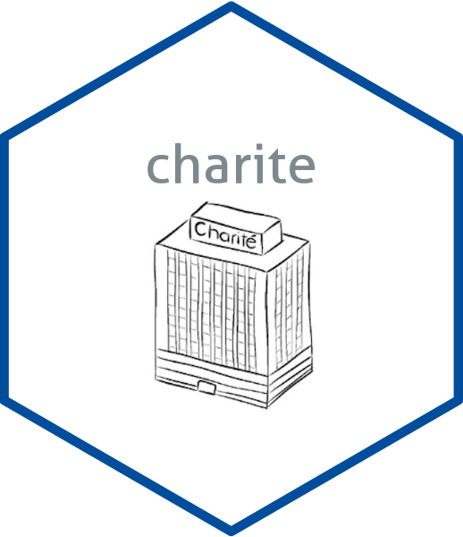
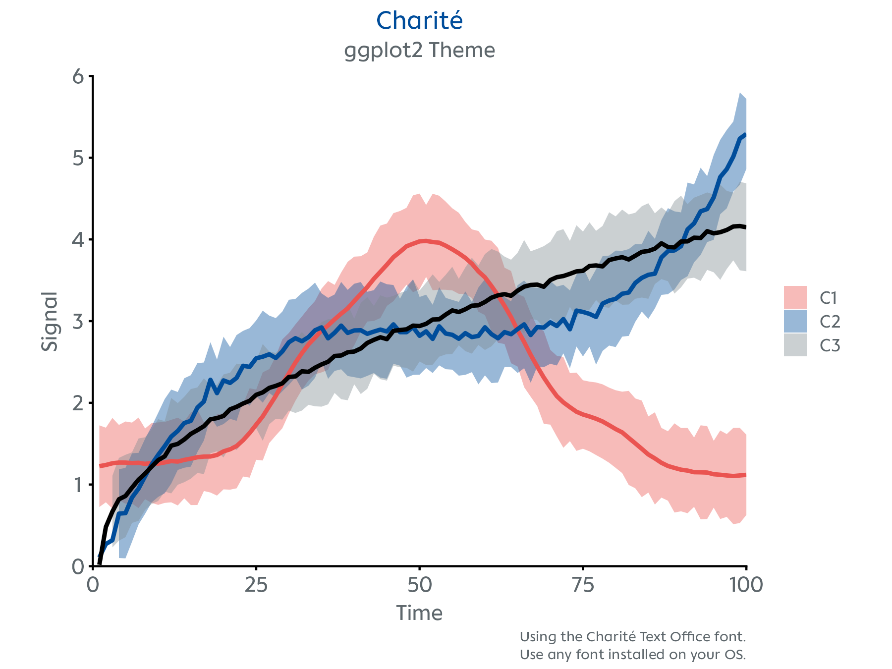
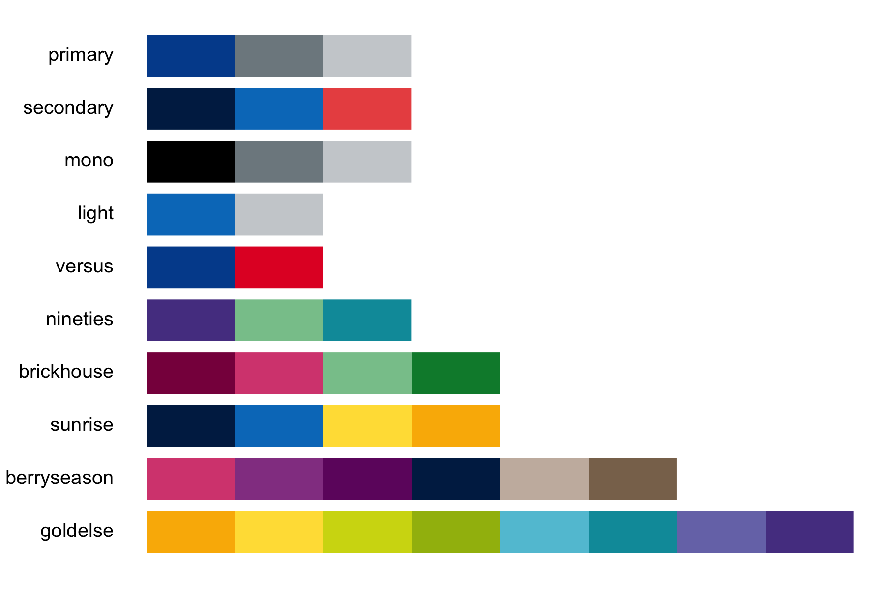

A minimal R package with a Charité-styled ggplot2 theme, visual identity colour palettes, and publication-ready figure export for manuscripts and slides.
Installation
You can install the development version of charite from GitHub with:
# install.packages("devtools")
devtools::install_github("johannesjuliusm/charite")To install the package on a machine with proxies, e.g., the standard Windows PC in the Charité network, find more detailed installation instructions in the installation vignette.
Examples
Visualize your data with theme_charite() to match the corporate style.

Preview the available colour palettes.

Workflow
# create your ggplot2 figure
p <- ggplot(data, aes(x = x, y = y)) +
geom_point(size = 3, color = charite_colors$HIMBEER) # use any of the Charité colors
# format the plot style
p <- p + theme_charite()
# alternatively, customize the plot style further
# for example by specifying a font
p <- p + theme_charite(font = "Charité Text Office")
# easily save your plot in a format optimized for slides and publications
nice_save("myfigure.png", p, layout = "slides")Available Functions
-
theme_charite()– A custom ggplot2 theme -
charite_colors– Named list of hex codes of the Charité visual identity colours -
charite_palettes– Named list of colour palettes derived from the Charité visual identity colour scheme -
preview_charite_palettes()– Shows the available colour palettes as colour swatches -
nice_save()– ggsave wrapper with defaults ideal for high-res figures for publication -
scale_color_charite()– ggplot2 colour scale using palettes fromcharite_palettes -
scale_fill_charite()– ggplot2 fill scale using palettes fromcharite_palettes -
example_plot()– Generates a demo plot -
make_charite_palette()– Internal function to interpolate or reverse colour palettes -
virchow()– Surprise console ASCII art. Use for fun -
curves– Included dataset with time series curves for demo plot
Author
Developed by Johannes Julius Mohn
Max Planck School of Cognition & Charité – Universitätsmedizin Berlin
Report bugs here.
Get in touch via johannes.mohn@charite.de
How to Acknowledge
If you use this package in your work or publication, please acknowledge the author.
Example: “The figures were generated using a custom theme from the charite R package by Johannes Julius Mohn (https://github.com/johannesjuliusm/charite).”